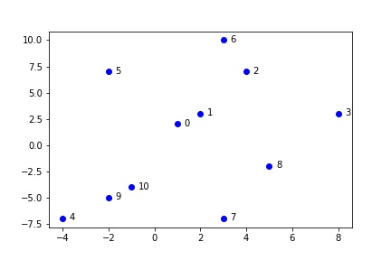
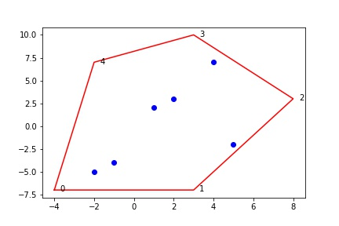
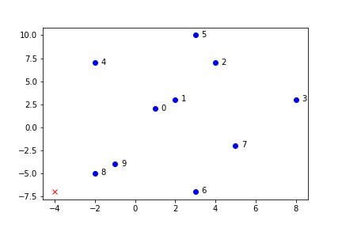

What's Graham Scan Algorithm
It finds convex hull.
From the following input
You will get these
How?
-
Find lowest point P0
 -
Order the rest points according to the angles from the P0
- Start doing scan from P0, and P1(1st of sorted of all rest points), if the progressing to the next point is a left turn, push it to the stack, if it's a right turn, pop out the stack until it's a left [this step is a bit complex, I'm thinking a way to express the steps in GIF...]